The Ingredients
Plant based Vegan Gluten-free Wholefood-based
Chewables
Our Fruit & Vegetable Blend Soft Chewables complement your diet with added nutrition from 20 different fruits and vegetables, plus selected vitamins and other plant ingredients in a delicious vegan gummy form
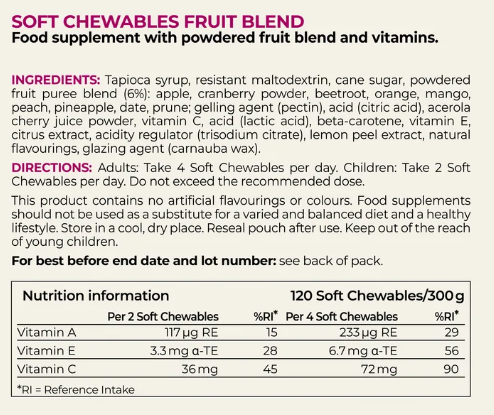

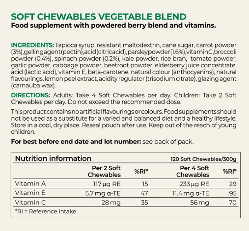
Capsules
2 seconds + 4 capsules = nutrition from 20+ different fruits, vegetables and selected vitamins.The result? Scientifically proven ways to support your whole-body health.
With only 1 in 8 adults consuming the recommended daily intake of fruit and vegetables, our plant-based capsules provide a convenient way to support your daily nutrition with proven bioavailable nutrients designed to complement a healthy, balanced diet and active lifestyle.

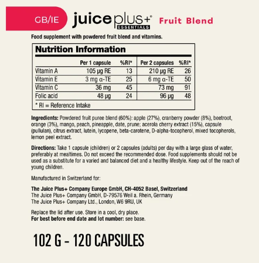
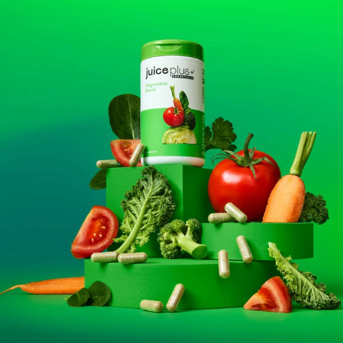
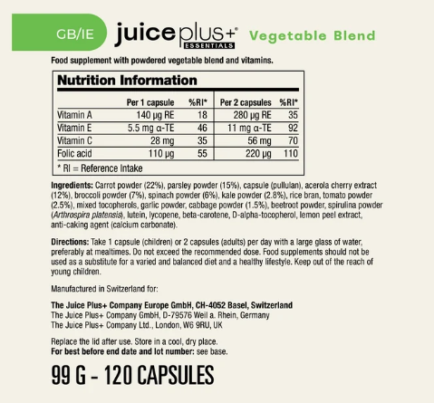
The Research
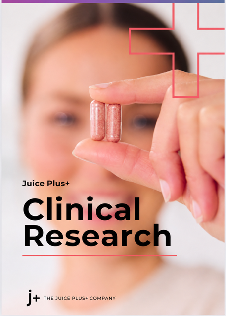
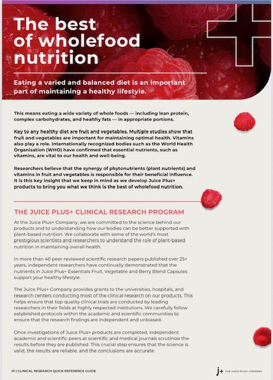
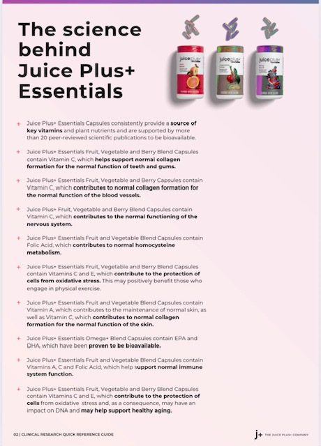
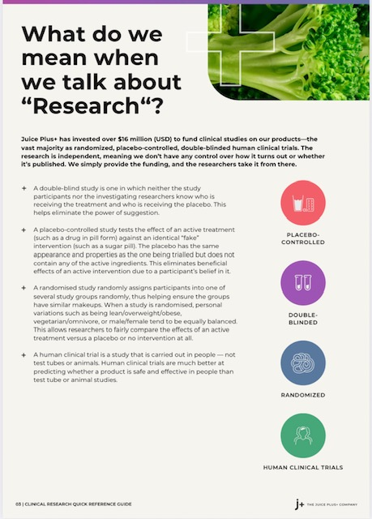
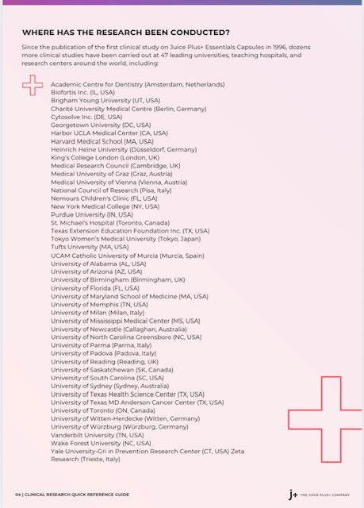
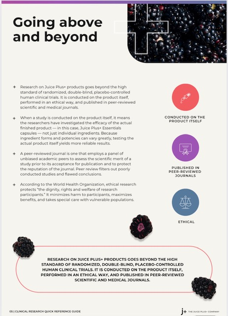
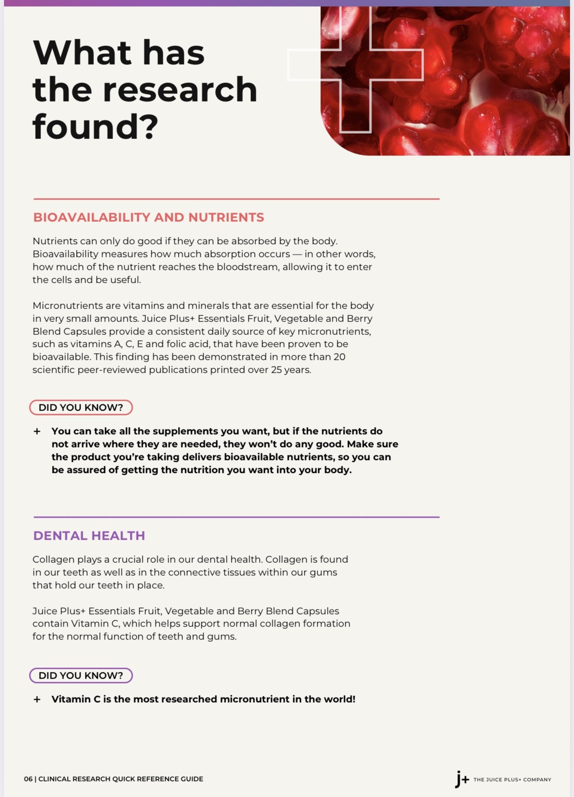
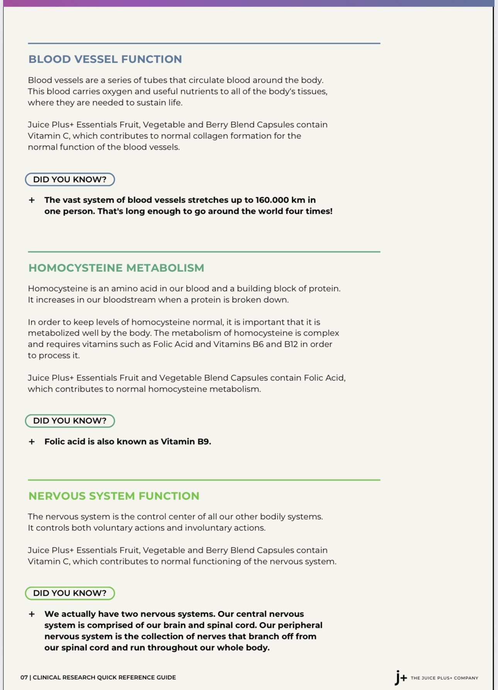
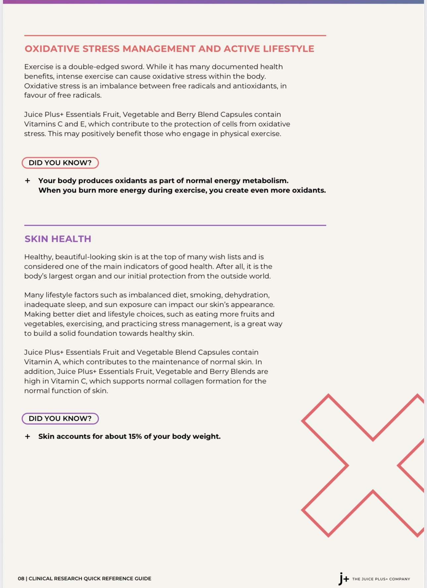
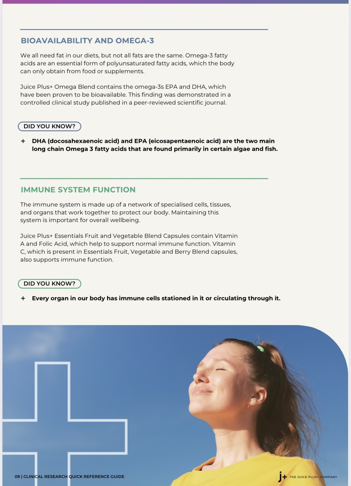
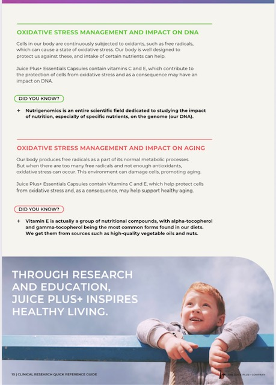
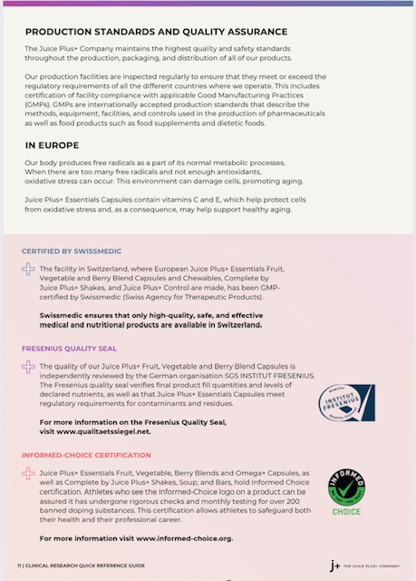
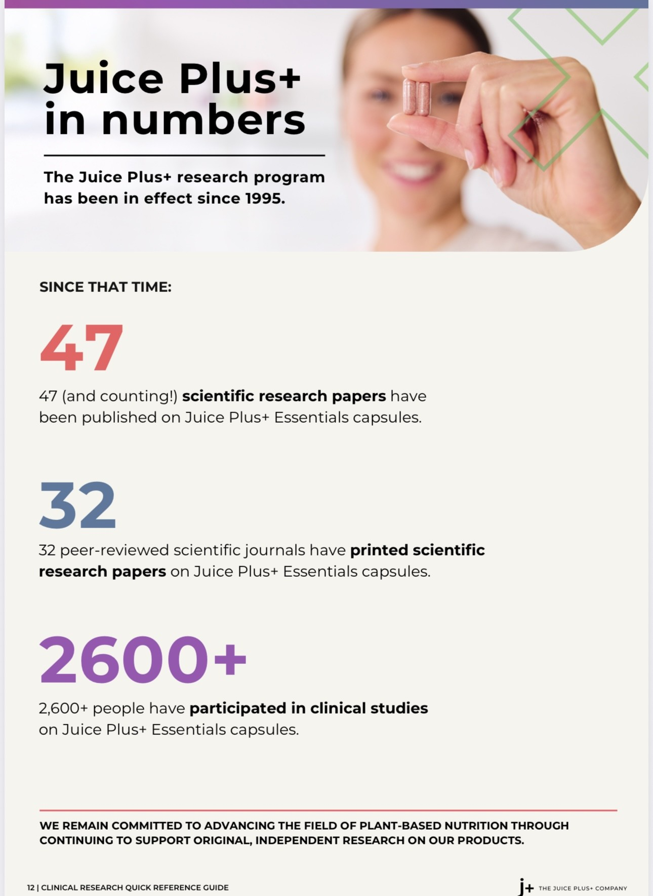
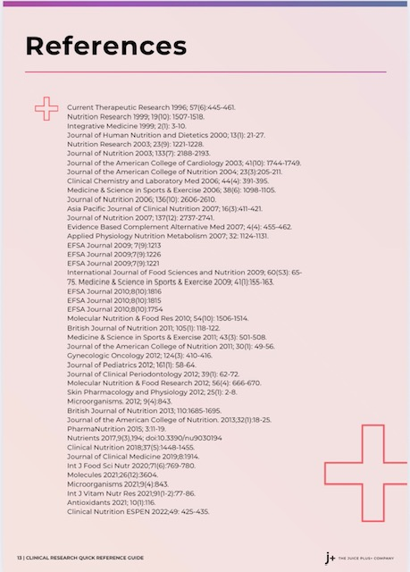